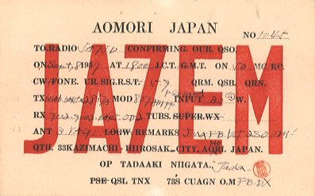
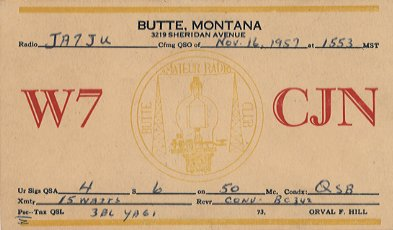
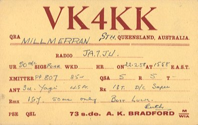

私(JA1RJU/JA7JU)が6mでQSOした、最初の6大陸のQSLをまとめて6枚紹介します
|
6大陸から...初めてのQSL

ASIA
JA7EM・1957年9月8日
1957年9月、青森県弘前市でJA7JUを開局した私の1st-QSOは6mのローカル局(JA7EM)だった。
落成検査の終わるのを待って、当局の"CQ"に応答してくれた。
このQSOの後は、秋にQSOしたW7CJNまで6mで相手は居なかった。
|

NORTH AMERICA
W7CJN・1957年11月16日
サイクル19のピーク(1957年)時にQSOしたこの局は6mでQSOした2番目の局。
当時、ローカル局が居なかったので、QSO相手は外国の局が多かった！
|

OCEANIA
VK4KK・1958年2月22日
サイクル19で日本から初めて6mでQSOに成功した外国の局・VK4NG（故人）と共に、
当時アクティブだったluth。サイクル22までは6mで電波が聞こえていたが、いまだ健在？
|

SOUTH AMERICA
LU3EX・1979年3月1日
南米アルゼンチンのアクティブ局。1975年の開局から、南米大陸とのQSO成功まで22年の歳月が...。
|

AFRICA
EL2FY・1980年10月11日
西アフリカのリベリアから、JA1XAF斎藤さん（故人）が運用するこの局で、
アフリカ大陸をコンファームしたJA局は多い。 朝方のロングパスで聞こえた。
|

EUROPE
ZB2BL・1981年2月23日
この局とのQSOで、念願の日本とヨーロッパが初めて6mで結ばれた。このQSOで6mWACの完成者が続出。
|